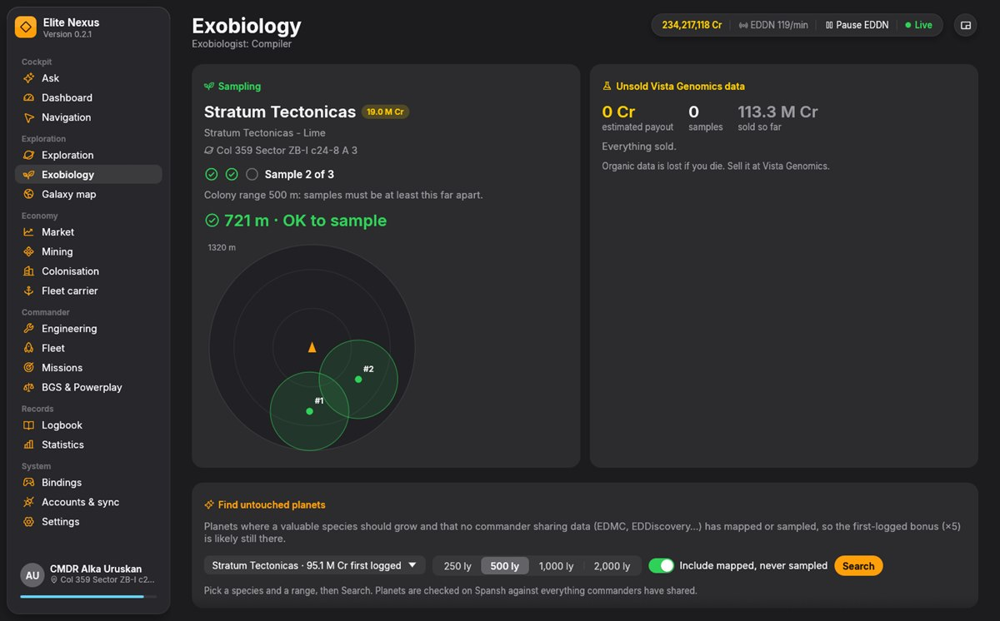
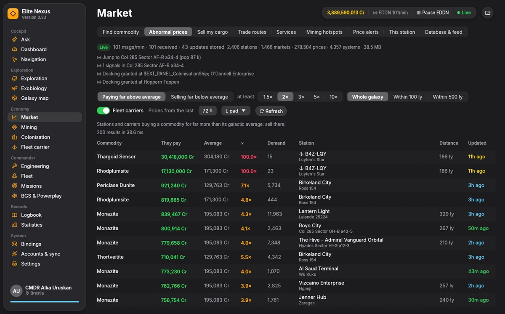
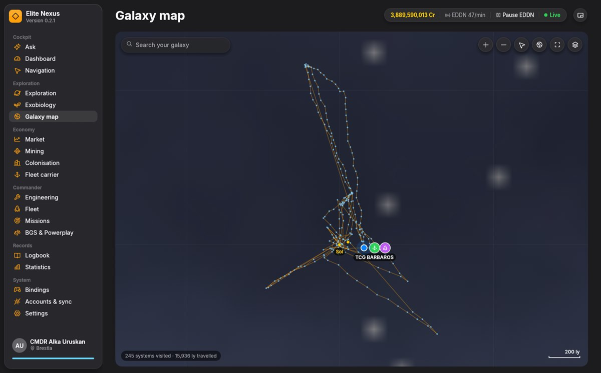

All posts
Desktop appElite Nexus
Elite Nexus
One native companion app for Elite Dangerous and Odyssey, in place of the pile of tools and websites commanders keep open next to the game.
- Rust
- egui
- SQLite
- EDDN
- Open source

Commanders usually run a handful of tools beside the game (EDDiscovery, ED Market Connector, Observatory, Odyssey Materials Helper) and keep Inara, Spansh and EDSM open in a browser. Elite Nexus puts that in one program.
It's pure Rust: no Python, no Node.js, no browser engine. One executable with a GPU-rendered interface (egui and wgpu), free and open source under the GPL-3.0.
What's in it
- Exploration and exobiology. Every body as you scan it, with its value now and once mapped; a live sampling radar with colony range; scan tours planned with Spansh.
- Live trading. Market data straight from the EDDN feed into a local database, so prices show up the moment any commander docks.
- Navigation, engineering, fleet and carrier. Routes with scoopable stars, blueprint shopping lists, every ship's loadout, tritium and carrier finances.
- The cockpit. HUD colours that can keep hostiles red (see the devblog), a cockpit-light dimmer and glare settings.
- Ask. An AI co-pilot that answers from your ship, cargo, journal and the market database.

Fast on purpose
| Full journal history | about 40–60 ms for 16,500 events |
|---|---|
| Live updates | journal and Status.json read every 100 ms |
| Best price within 50 ly | about 1 ms on a database of 80,000 stations |
| Start to usable | about one second |

Your game, your data
- Journals are only ever read.
- Uploads to EDDN, EDSM, Inara and EDAstro are opt-in and send live events only, never your history.
- Game settings change only when you click, and the original file is kept.
- API keys are stored encrypted on Windows.
